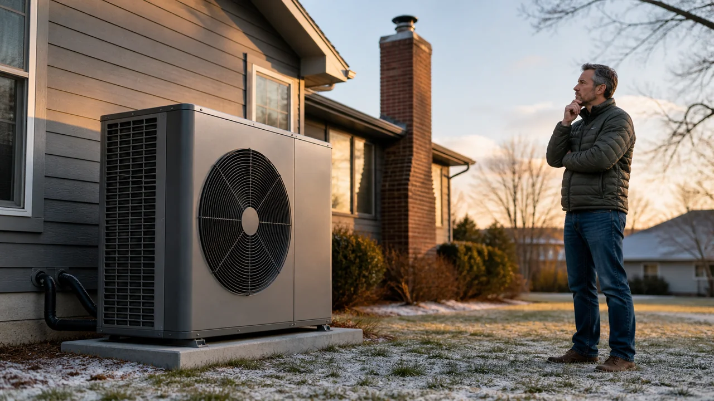

Advertising Disclosure: This site may receive compensation for service connections made through this page. Content is editorially independent.
In mild-to-moderate climates with average-or-cheaper electricity, a modern heat pump is 20 to 40 percent cheaper to run per heating season than a gas furnace and replaces both heating AND cooling. In deep-cold climates (zone 6+) or where natural gas is unusually cheap, a high-efficiency gas furnace often still wins on operating cost. Federal 25C tax credit ended December 31, 2025 (OBBBA); HEAR rebates roll state-by-state. Get the right call by plugging your local utility rates into the COP-vs-AFUE comparison below — generic answers either way ignore what matters most.
Replacing an HVAC system is a $5,000 to $20,000 decision, and the heat-pump-vs-gas-furnace question now sits at the center of it. The 2026 reality is more complicated than either side admits: heat pumps got dramatically better in cold weather over the last five years, but the federal incentives that pushed them in 2024-2025 partially expired on January 1, 2026. This guide is the honest math — what the comparison actually looks like for your specific climate and utility rates, what the OBBBA tax-credit reality means today, and the 15-year total-cost picture both vendors leave out of their pitch decks.
If you're weighing the broader repair-or-replace question (not just heat pump vs furnace specifically), start with our repair-or-replace decision framework — the C5 pillar covering the 5-question framework, cost thresholds, and system-type modifiers. For the cost side of either choice, the canonical reference is the 2026 HVAC Cost Guide — every figure in this article comes straight from it.
The Honest Side-by-Side Comparison
The two technologies do different things. A gas furnace burns natural gas to make heat — that's it. A heat pump moves heat from outside air into your home (and reverses to cool in summer), so it replaces BOTH a furnace AND an AC system. That structural difference matters for the cost comparison.
| Factor | Heat Pump | Gas Furnace |
|---|---|---|
| Upfront install | $5,500–$12,000 (standard); $8,000–$18,000 (cold-climate) | $3,000–$7,500 |
| Replaces AC? | Yes — one system handles heating + cooling | No — you also need a $3,200–$7,000 AC system |
| Combined heat + cool cost | $5,500–$18,000 | $6,200–$14,500 (furnace + AC) |
| Operating cost (mild/moderate climate) | 20–40% cheaper than gas furnace | Baseline |
| Operating cost (deep-cold) | Comparable or higher than gas (depends on utility rates) | Often wins below 20°F sustained |
| Lifespan | 12–18 years | 15–20 years |
| Federal tax credit (2026) | Terminated 12/31/2025 (OBBBA) | Terminated 12/31/2025 (OBBBA) |
| State / utility rebates | HEAR up to $8,000 (state-rolling) | Smaller efficiency rebates available |
| Indoor air quality / safety | No combustion — zero CO risk indoors | Combustion appliance — requires CO detector + flue maintenance |
Estimated ranges based on publicly available industry data. Actual costs vary by region, provider, and system age.
Operating Cost Math: When Each One Wins
Here is the comparison most articles skip. Heat pump efficiency is measured in COP (coefficient of performance) — a modern unit produces 2.5 to 3.5 BTU of heat per watt-hour of electricity at typical winter temperatures. Gas furnace efficiency is measured in AFUE (annual fuel utilization efficiency) — a modern condensing furnace converts 95 to 98 percent of the gas into usable heat.
To translate that into actual dollars, you compare cost-per-million-BTU on each side:
- Heat pump cost per million BTU = (electricity rate per kWh) ÷ (COP × 0.293)
- Gas furnace cost per million BTU = (gas rate per therm) ÷ (AFUE × 0.1)
At U.S. average rates (2026 EIA estimates: $0.165/kWh electricity, $1.55/therm natural gas) and typical efficiencies (COP 3.0, AFUE 96%), the math comes out to:
- Heat pump: $0.165 ÷ (3.0 × 0.293) = ~$18.80 per million BTU
- Gas furnace: $1.55 ÷ (0.96 × 0.1) = ~$16.15 per million BTU
At average rates, gas wins by ~14 percent. But this is highly sensitive to local utility pricing. In Charleston, WV where electricity is below average and gas is above average, the heat pump beats gas by 15 to 25 percent. In Grand Rapids, MI where gas is exceptionally cheap, gas wins by 25 percent or more. In Pacific Northwest cities with hydro-power electricity at $0.10/kWh, heat pumps win by 40 percent or more even in cool winters.
The U.S. Department of Energy heat pump guide covers the COP framework in more detail. The honest answer is: plug your actual local utility rates into the formulas above before deciding. Generic "heat pumps are cheaper" or "gas is cheaper" claims ignore the variables that matter most.
Climate Matters: Heat Pump in Bangor vs. Phoenix
Climate changes the calculation more than any other variable. Three concrete examples from the cities this article links to:
Bangor, Maine (cold-humid, January average 16°F): A standard heat pump struggles with capacity below 25°F and falls back to expensive electric-resistance auxiliary heat. A cold-climate heat pump (Mitsubishi Hyper-Heat, Daikin Aurora) holds full capacity to 5°F and works to -15°F. For homes here, the smart play is usually a dual-fuel system: heat pump above 30°F (90 percent of the heating season hours by BTU), gas furnace below. Best of both: efficient heat pump for the 95 percent of the year that is mild, gas furnace for the 5 percent of deep cold when the heat pump's economics flip.
Grand Rapids, Michigan (cold-humid, January average 19°F): Similar climate to Bangor but Michigan's gas-utility rates are among the cheapest in the country. Even with a cold-climate heat pump, the operating-cost math here usually favors gas. Most homes still install a heat pump for cooling (replacing the AC) but keep the gas furnace for primary heating. This is also a dual-fuel pattern, just sized differently.
Charleston, West Virginia (mixed-humid, January average 30°F): Sweet spot for heat pumps. Mild winters mean the heat pump operates near its peak COP for most of the heating season. Reasonable electricity rates plus elevated regional gas rates make the cost-per-million-BTU math favor heat pumps by 20 to 30 percent. Most homes here can fully convert from gas to a heat pump without comfort or cost penalty.
Phoenix, Arizona (hot-dry, January average 45°F minimum): Heat pump territory by default. Winters are mild enough that the heat pump operates above 80 percent of rated capacity even on the coldest mornings. Phoenix homes that still have gas furnaces are usually older installs from before heat pumps were common in the Southwest; new construction defaults to heat pumps. The compelling case here is summer cooling — a heat pump replaces both the AC compressor (which dies under desert heat stress more than anywhere else) and the rarely-used heating side.
For broader climate-by-climate maintenance considerations on either technology, see our year-round HVAC maintenance playbook. If your existing furnace is the trigger for this decision, our furnace not working diagnostic guide walks through whether the furnace is salvageable or replacement-only.
Get connected with a technician in your ZIP code.
Call Now — (844) 582-1795Disclosure: We are a referral service and may receive compensation for qualified calls. Calls may be routed to an independent provider network and may be recorded. Pricing and availability vary by provider and location.
The 2026 Reality: OBBBA, HEAR Rebates, and What's Actually Available
Most heat-pump-vs-furnace articles still online were written in 2023 or 2024 and cite the federal Section 25C Energy Efficient Home Improvement Credit as a major financial argument for heat pumps. That credit is gone. The One Big Beautiful Bill Act (Public Law 119-21, signed July 4, 2025) terminated 25C for property placed in service after December 31, 2025. Per the IRS Fact Sheet 2025-05, equipment installed in 2026 does not qualify for the federal credit on either side of this comparison.
If your HVAC was installed by December 31, 2025, you can still claim the credit on your 2025 tax return — see the IRS Section 25C page for filing details. For 2026 installs, the federal route is closed.
The state-level Home Electrification and Appliance Rebates (HEAR) program (formerly proposed as HEEHRA) is what's left. HEAR offers up to $8,000 toward a heat pump installation for income-qualified households, but it's rolling out state-by-state — only a handful of states have active programs as of mid-2026. Check your state energy office for current availability. Utility-level rebates from local energy companies (TVA, Duke Energy, Pacific Gas & Electric, etc.) often add another $500 to $2,000 on top.
The honest framing: do the heat-pump-vs-furnace math without counting on federal credits, then treat any state or utility rebate as a bonus. Vendors who lead with "you'll get $8,000 back from the government" are quoting a pre-2026 reality and may be quietly hoping you won't check. This is general guidance, not tax advice; consult a qualified tax professional and your state energy office for your specific situation.
Total 15-Year Cost of Ownership
Upfront cost is only one piece. The honest comparison adds installation, operating cost across 15 years, expected repairs, and end-of-life replacement. Using U.S. average rates and a 1,800 sq ft home with 50 million BTU annual heating load:
- Heat pump (mild/moderate climate, no AC needed): $9,000 install + $940/year operating × 15 years = ~$23,100 lifetime. Plus expected repairs $2,000 to $4,000 over that span.
- Gas furnace + separate AC (same climate): $5,500 furnace + $5,000 AC install = $10,500 + $810/year operating × 15 years = ~$22,650 lifetime. Plus expected repairs $3,000 to $5,500 over the span (two systems = more repair surface).
At U.S. average rates the two systems are within $500 of each other over 15 years — effectively a tie when you account for repair-event variance. The decision is rarely about lifecycle dollars; it's about which technology fits your specific climate, electricity-vs-gas rate ratio, comfort preferences, and indoor-air-quality concerns. If your local rates lean either direction (cheap electricity OR cheap gas), the gap widens to $5,000 to $10,000 over 15 years.
For the detailed cost breakdowns of each repair category referenced above, see the 2026 HVAC Cost Guide.
When to Choose Heat Pump (and When Not To)
Choose a heat pump when:
- You need to replace AC AND furnace at the same time (consolidation savings)
- Your local electricity rate is below $0.16/kWh AND gas rate is above $1.50/therm
- You're in zone 5 or warmer (mild to moderate winter average)
- You want to eliminate combustion appliances and CO risk indoors
- State or utility rebates substantially offset the upfront premium
- You live in a state with HEAR rolled out and qualify income-wise
Stick with a gas furnace (or dual-fuel) when:
- You're in zone 6 or colder with sustained subzero winters and no cold-climate heat pump in budget
- Your local natural gas is exceptionally cheap (sub-$1/therm)
- Your existing furnace is under 10 years old and AFUE 90%+ (replace AC only, keep furnace)
- Your home does not have adequate electrical service to support heat-pump auxiliary heat (200-amp service is the minimum for cold-climate dual-fuel)
The dual-fuel option (heat pump + small gas furnace) is the underrated compromise for cold-climate homes. Heat pump runs 80 to 90 percent of the heating season at high efficiency; gas furnace handles the deep-cold edge cases. Best of both, slightly higher install cost ($10,000 to $15,000), faster payback than either alone in zone 5 to 6 climates.
Trusted Industry Sources
The guidance in this article is consistent with published recommendations from:
- U.S. Department of Energy — Heat Pump Systems
- U.S. Department of Energy — Furnaces & Boilers
- EPA Section 608 — Refrigerant Handling Regulations
- ENERGY STAR — Clean Heating & Cooling
- IRS Section 25C — for 2025 tax-year filings (terminated for 2026 installs)
A technician can assess your system and walk you through your options.
Call Now — (844) 582-1795Disclosure: We are a referral service and may receive compensation for qualified calls. Calls may be routed to an independent provider network and may be recorded. Pricing and availability vary by provider and location.
Frequently Asked Questions
It depends on local utility rates and climate. In mild and moderate climates with electricity at or below the U.S. average and natural gas above the U.S. average, a modern heat pump is typically 20 to 40 percent cheaper to run per heating season. In deep-cold climates (zone 6+) or where natural gas is significantly cheaper than electricity, a high-efficiency gas furnace often wins on operating cost. The honest math requires plugging your actual local rates into a coefficient-of-performance comparison — generic claims either way ignore the variables that matter most.
Modern cold-climate heat pumps work effectively down to about 5°F outside without auxiliary heat, and to -15°F or lower with backup electric resistance heat. The U.S. Department of Energy notes that cold-climate heat pump technology has advanced significantly since 2018 — earlier-generation units that struggled below 30°F are no longer the norm. In subzero climates like Bangor, ME or upper Michigan, dual-fuel systems (heat pump for moderate days + gas furnace for deep cold) are often the optimal balance.
Per the canonical 2026 cost guide, a standard gas furnace runs $3,000 to $7,500 installed. A standard ducted heat pump runs $5,500 to $12,000 installed. Cold-climate heat pumps (Mitsubishi Hyper-Heat, Daikin Aurora, etc.) run $8,000 to $18,000 installed. Heat pumps cost more upfront but eliminate the separate AC system the home would otherwise need — when you account for that, a heat pump replaces both furnace AND AC at lower combined cost than buying both separately ($3,200 to $7,000 for AC + $3,000 to $7,500 for furnace = $6,200 to $14,500).
The federal Section 25C Energy Efficient Home Improvement Credit was terminated for property placed in service after December 31, 2025 by the One Big Beautiful Bill Act (Public Law 119-21, signed July 4, 2025). Heat pumps installed in 2026 do not qualify for the federal 25C credit. The Home Electrification and Appliance Rebates (HEAR) program is rolling out state-by-state and may offer up to $8,000 for income-qualified heat pump installation in participating states — check your state energy office for current availability. This is general guidance, not tax advice; consult a qualified tax professional for your specific situation.
In most U.S. climates, yes. A properly-sized heat pump handles both heating and cooling year-round, eliminating the gas service entirely if the home converts. Two scenarios where a heat pump should NOT fully replace the furnace: (1) climates with sustained subzero winters where dual-fuel makes more sense (heat pump above 30°F, gas furnace below); (2) homes with extremely cheap natural gas where the operating-cost math still favors gas. Most mid-Atlantic, Southeast, Pacific Northwest, and California homes can fully convert without sacrificing comfort or cost.
A modern gas furnace typically lasts 15 to 20 years with proper maintenance — heat exchanger crack is the limiting factor. A modern heat pump typically lasts 12 to 18 years — compressor replacement at 12 to 15 years is the most common end-of-life event. Heat pumps in coastal salt-air climates may reach the lower end. Per our maintenance playbook, both technologies benefit from twice-a-year tune-ups; the operating-cost math assumes both are properly maintained, not neglected.
Local HVAC Service Areas
Cool Call Pro connects homeowners with independent HVAC technicians nationwide. Find a pro in Bangor (ME), Grand Rapids (MI), Charleston (WV), or Phoenix (AZ), or browse by state: Maine, Michigan, or all locations.